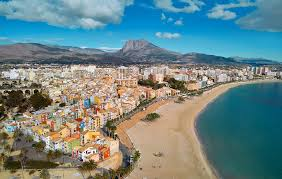
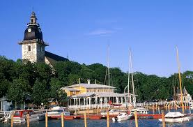
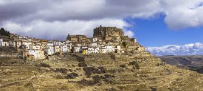
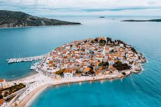
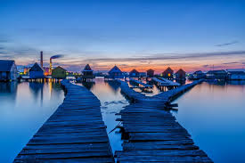

Five Hidden Gems In Europe
-
Villajoyosa, Spain

-
Naantali, Finland
In Naantali, a little town in southwestern Finland, you can experience the whimsical, colorful world of the Moomins—quirky characters created by a Finnish author in 1945. This enchanting seaside town even has a theme park dedicated to the Moomins called Muumimaailma.
ARES del Maestre, Spain
Perched atop a rocky hill, Ares del Maestre—built in the 1300s in the province of Castellon—offers panoramic views and centuries of Spanish history. Wander through narrow cobblestone streets and explore ancient castles.
Primosten, Croatia
In Primosten—set along Croatia’s Dalmation coast—you’ll find pristine beaches and azure waters. You can indulge in fresh seafood, stroll along waterfront promenades and discover why this coastal paradise is still Croatia’s best-kept secret.
Lake Bokodi, Hungary
On Lake Bokodi, an hour drive from Budapest, there’s a village of floating chalets that’s an Instagrammer’s dream. Some of the chalets are private (many belong to local fishermen), but others are open to visitors. Explore the winding waterways and unwind in the serenity of this hidden Hungarian gem.
Experience a kaleidoscope of colors in Villajoyosa (which means “the jewellish town” in the Castilian language). Here, jewel-toned houses line the shores in a nod to the town’s seafaring heritage, overlooking crystal-clear Mediterranean waters.